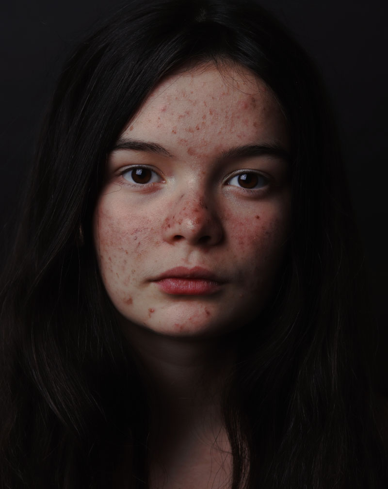
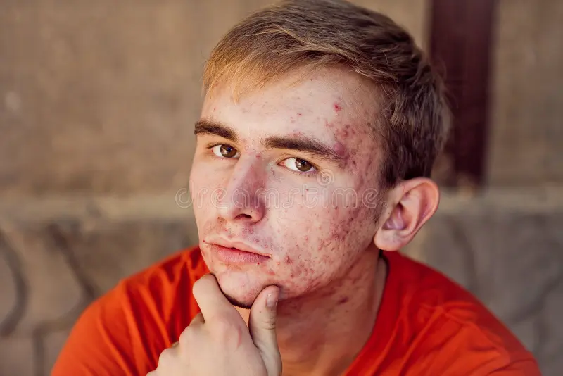

Acne
1. Acne
A acne é uma das doenças de pele mais comuns no mundo, afetando milhões de pessoas, principalmente adolescentes. Caracteriza-se pela
inflamação das glândulas sebáceas e folículos pilosos, resultando em espinhas, cravos e, em casos mais graves, cistos. A condição é frequentemente desencadeada por alterações hormonais, mas fatores como dieta, estresse e genética também podem influenciar. Embora não seja uma condição grave, a acne pode causar desconforto e impacto emocional significativo, especialmente em jovens. Tratamentos incluem tópicos, medicamentos orais e terapias a laser.


Dermatite Atópica
A dermatite atópica, também conhecida como eczema, é uma condição crônica que causa pele seca, coceira e inflamação. Afeta tanto crianças quanto adultos, mas é mais comum em crianças. A doença é influenciada por fatores genéticos e ambientais, e está frequentemente associada a outras condições alérgicas, como asma e rinite alérgica. O manejo da dermatite atópica inclui hidratação regular da pele, uso de cremes e pomadas corticosteroides e evitar desencadeantes conhecidos. Em casos graves, imunomoduladores e terapias biológicas podem ser necessários.
Psoríase
A psoríase é uma doença autoimune que provoca o crescimento rápido das células da pele, resultando em manchas espessas, escamosas e vermelhas, frequentemente em áreas como couro cabeludo, cotovelos e joelhos. Embora a causa exata não seja totalmente compreendida, acredita-se que fatores genéticos e imunológicos desempenham um papel importante. A psoríase pode variar de leve a grave e pode impactar significativamente a qualidade de vida. O tratamento inclui tópicos, fototerapia e medicamentos sistêmicos para reduzir a inflamação e retardar a produção excessiva de células da pele.